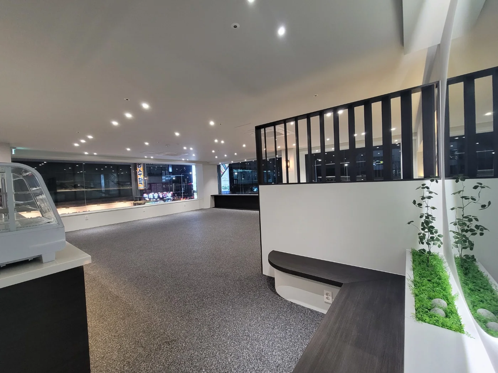
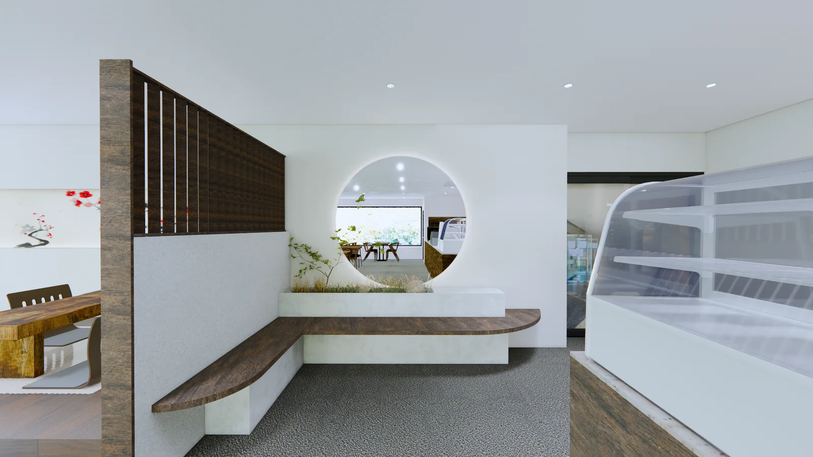

Free Consultation
현장 상담부터 편하게 시작하세요.
전화나 견적 양식으로 연락 주시면 확인 후 안내드립니다.

상가와 아파트를 같은 팀이 시공합니다. 철거만 따로 맡기셔도 됩니다.
식당, 카페 등 점포 인테리어. 프랜차이즈 매장 시공 경험이 있습니다.

아파트와 주택 리모델링. 거주 불편을 줄이는 공정으로 진행합니다.

철거 전문 인력이 직접 진행합니다. 철거만 별도로 의뢰할 수 있습니다.
도면과 3D 렌더링으로 시공 전에 완성 모습을 확인합니다.
사내 디자이너가 현장을 실측해 도면을 그리고, 3D 렌더링으로 완성 모습을 먼저 보여드립니다. 아래는 실제로 진행한 카페 하녹 프로젝트입니다.

카페 하녹 프로젝트의 실제 평면도, 3D 렌더링, 시공 사진입니다.
실제로 시공한 현장입니다. 더 많은 사진은 블로그와 인스타그램에서 볼 수 있습니다.


공사 규모에 따라 최소 5일, 최장 2주가 걸리며 현장 상황에 맞게 조율할 수 있습니다. 공종별 투입 시기를 정해 일정이 겹치지 않게 진행합니다. 아래는 최장 2주 기준 예시이며 실제 일정은 상담 후 공정표로 드립니다.
견적 문의부터 사후 관리까지 8단계로 진행합니다.
전화 또는 견적 양식으로 접수
현장을 보며 요구사항 확인
정확한 치수 측정
도면과 3D 렌더링 제안
견적과 공정표 확정
철거부터 마감까지 시공
점검 후 인도
하자 접수와 보수
공사 규모에 따라 최소 5일에서 최장 2주가 걸리며, 현장 상황에 맞게 조율할 수 있습니다. 정확한 일정은 현장을 확인한 뒤 공정표로 안내드립니다.
가능합니다. 철거 전문 인력이 직접 진행합니다.
경기도 전역을 중심으로 하고, 서울·인천 등 외부 지역도 거리와 공사 규모를 보고 상담합니다.